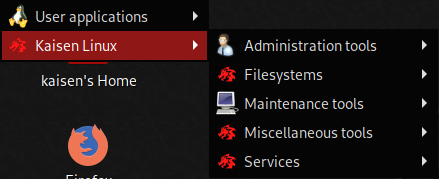

Kaisen Linux | manpages
This documentation contains 451 manual pages for applications from kaisen-menu.

Kaisen-menu category
- Actually 451 manpages are referenced on this website.
Other Links
- Check the official kaisen-linux website.
- Check the official kaisen-linux documentation.
- Check debian testing manpages for additionnal help.
Changelog
v0.3 - 28.02.2021 - Adding custom css and update links for new kaisen website.
v0.2 - 28.01.2021 - Adding dropdown with filter by category.
v0.1 - 26.12.2020 - init project manpages.
Contributor
Manpages for Kaisen Linux made by Arnaud Cormier - freelance at magiklabs